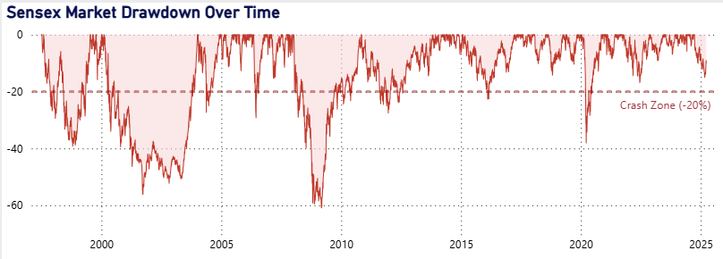
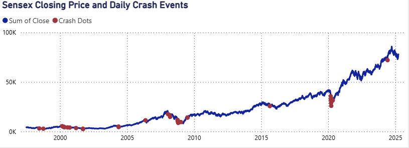
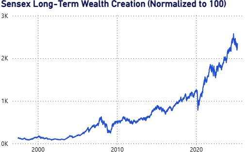
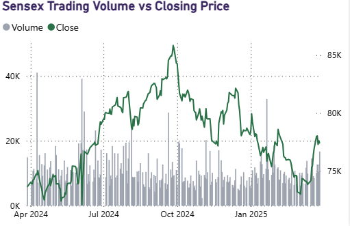
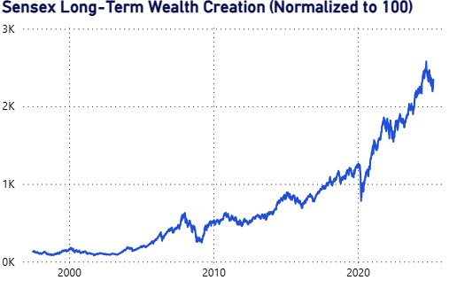
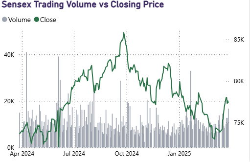
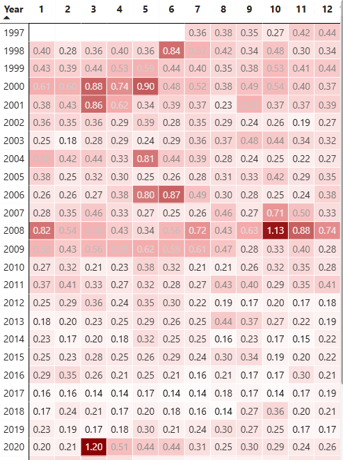
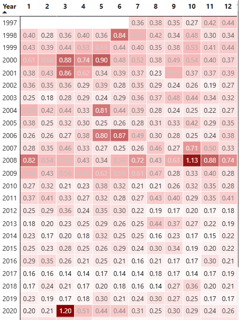

Stock Market Crash Analysis
Executive Summary
This project analyzes 30+ years of Sensex historical data to evaluate market performance, downside risk, volatility,
and crash behavior using an interactive Power BI dashboard. The goal is to help investors and analysts understand not only
long-term returns but also the risk endured to achieve those returns. The dashboard enables time-based exploration and highlights
major market crises, drawdowns, and recovery phases to support informed investment decision-making.
Business Problem
Traditional market analysis often focuses primarily on returns, ignoring critical risk dimensions such as drawdowns, volatility clustering, and crash frequency.
This can lead to misinformed investment decisions, unrealistic expectations, and poor risk management.The challenge was to create a single, intuitive analytical
view that combines performance and risk metrics across multiple market cycles, while allowing users to dynamically explore different time horizons.
Methodology
- Collected and cleaned daily Sensex data (Date, Open, High, Low, Close, Volume).
- Calculated key financial metrics using DAX, including:
- Daily Returns
- Cumulative Maximum
- Drawdown %
- Normalized Index (Rebased to 100)
- Volatility
- CAGR
- Built interactive Power BI visuals such as:
- Drawdown area charts
- Candlestick price charts
- Volume & price combo charts
- Volatility heatmapsL
- KPI cards
- Implemented period-based slicers (3M, 6M, 1Y, 5Y, All) for dynamic analysis.
- Designed custom tooltips to provide contextual insights (returns, volume, risk metrics).
Dashboard Features

- Visualizes peak-to-trough declines
- Highlights bear markets using a –20% crash zone
- Identifies severity and duration of historical crashes

Plots Sensex closing price
Highlights extreme negative return days
Reveals clustering of crash events during crises
 Compares current price to cumulative historical highs
Shows recovery periods after major downturns
Illustrates market resilience

Normalizes Sensex value to a base of 100
Visualizes long-term compounded growth
Removes scale bias for clearer trend interpretation

Combines volume histogram with price lines
Analyzes market participation
Detects panic selling and accumulation phases
Compares current price to cumulative historical highs
Shows recovery periods after major downturns
Illustrates market resilience

Normalizes Sensex value to a base of 100
Visualizes long-term compounded growth
Removes scale bias for clearer trend interpretation

Combines volume histogram with price lines
Analyzes market participation
Detects panic selling and accumulation phases
 Displays daily price action
Useful for short-term market behavior analysis
Highlights volatility and trend reversals

Monthly volatility aggregated by year and month
Crisis periods (2008, 2020) stand out visually
Efficient detection of risk regimes
Displays daily price action
Useful for short-term market behavior analysis
Highlights volatility and trend reversals

Monthly volatility aggregated by year and month
Crisis periods (2008, 2020) stand out visually
Efficient detection of risk regimes
Results
- Identified major drawdown periods (e.g., 2008, 2020) with clear visualization of severity and recovery.
- Demonstrated strong long-term wealth creation despite frequent short-term volatility.
- Revealed volatility clustering and volume spikes during market stress.
- Enabled interactive exploration of market behavior across different investment horizons.
- Delivered a professional, executive-ready dashboard suitable for both tactical and strategic analysis.
Business Recommendations
- Investors should focus on long-term investment horizons to benefit from compounding while managing short-term volatility.
- Drawdown analysis should be a core component of portfolio risk assessment, not just returns.
- Periods of extreme volatility and high volume can signal market stress or opportunity, depending on strategy.
- Dashboards combining performance and risk metrics improve transparency and support better decision-making.
- Similar analytical frameworks can be extended to other indices, sectors, or asset classes for broader portfolio analysis
Skills & Tools Used
- Power BI
- DAX (Measures & Calculated Columns)
- Financial Time-Series Analysis
- Data Modeling & Optimization
- Dashboard Design & Storytelling
- Data Visualization Best Practices
- Investment Risk & Performance Metrics
Conclusion
This dashboard provides a comprehensive view of Sensex performance by combining returns, risk, drawdowns, and volatility.
It highlights that while long-term wealth creation is strong, market crashes and high-volatility periods are integral to equity investing.
The project demonstrates how Power BI can be used effectively for financial time-series analysis to deliver clear, interactive, and decision-ready insights.
Project Links
View GitHub Repository
← Back to Portfolio